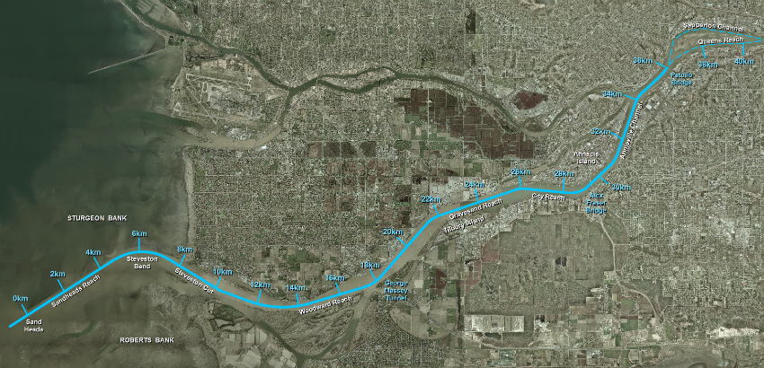

Predicted Water Levels & Velocities
Parameters
Date:
Fraser River:
South Arm (km 0-40)
North Arm (km 0-30)
Main Arm (km 40-92)
River Discharge @ Hope:
Predicted (
m³s)
Actual (
m³s)
Selected
m3/s
User Defined
m3/s
Interval:
15 minute
30 minute
1 hour
2 hour
Report:
Water Levels
Velocities

Apply
Print
Fraser River -
South Arm
For
at
1 hour
intervals
Hope Discharge
m3/s (
Predicted
)
Time (PST)
Water level is referenced to Chart Datum which is relative to Local Low Water.
Click on a time or location to display a graph.